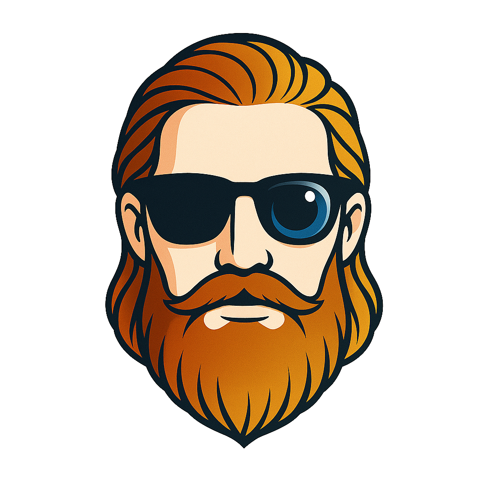

MF Concepts · TechnologyIsto é normal, não é um erro. As estatísticas acima já funcionam — o nível só aparece quando houver histórico suficiente para o modelo dizer algo de útil.
{{ prose.session }}
Divide-se a distância em linha reta entre o primeiro e o último ponto (a tracejado) pelo comprimento real do traçado (a azul). Um valor perto de 1.00 é uma onda levada quase a direito; quanto mais baixo, mais o percurso subiu e desceu a parede. Só entram na conta os segundos com posição medida.
Conta-se o que os sensores registam como movimento franco: uma mudança de direção rápida acompanhada de queda clara de velocidade e recuperação a seguir. Uma curva ligeira, feita sem travar, não tem esse perfil dinâmico e não entra na contagem.
{{ prose.wave }}
{{ prose.sig }}